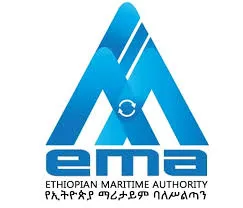
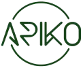

Experience
-

System Architect Cum Team Leader
Supervised the implementation of the Terminal Operating System at Modjo Dry Port, one of Ethiopia's largest dry ports. Led a cross-functional team to ensure seamless integration and operational efficiency. Collaborated with stakeholders to address challenges and optimize system performance.
-
Consultant – Intelligent Transportation Management System
Provide advisory support for deployment of intelligent transport and fleet digitalization systems. Translate operational requirements into scalable ITS architecture models.
-

CEO & Managing Director
Lead strategic direction, client partnerships, and delivery governance across technology, transport, and public-sector programs.
-
Senior Analyst
Contributed to technology advisory and infrastructure modernization programs. Supported system planning, analytics, and stakeholder coordination.
-
Chief Consultant
Led consulting engagements across transportation and infrastructure digitization. Managed client interface, delivery governance, and multi-vendor coordination.
-

Project In-Charge / Delivery Head (Product Manager)
Managed short- and long-term programs with simultaneous cross-functional teams and projects. Drove lifecycle planning, scheduling, risk management, and change control across scope, quality, cost, and contracts.
-

Deputy General Manager
IT Specialist, Traffic Information System for Kenya National Highways Authority, Kenya. Team Leader, Hydrological Design Aids, Central Water Commission, India.
Projects
-
Ports & Logistics Digitalization – East Africa
- Led advisory and validation of Terminal Operating System (TOS) and Gate Operating System (GOS) implementation.
- Oversaw integration alignment with customs, shipping lines, and external enterprise systems.
- Guided infrastructure, network, and data center readiness for mission-critical deployment.
- Established governance structures for testing, acceptance, and transition to operations.
-
National Multi-Stakeholder Integration Programs
- Coordinated government entities, regulators, and vendors toward unified digital workflows.
- Validated scalability, cybersecurity posture, and resilience of proposed architectures.
- Reduced delivery risk by enforcing structured documentation, traceability, and change control.
- Translated business pain points into implementable system blueprints.
- Contributed to bid strategy, technical narratives, and executive presentations.
- Enabled customers to visualize operational, financial, and organizational impact.